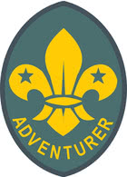
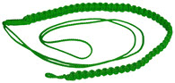

Adventurer Badge - Instructing Others
The are 8 Target Badges that provide the main source of program material and aim to encourage participation and develop basic skills. The first of these is the Adventurer Cord.
To earn your Adventurer badge you must complete the two compulsory Target badges:
And complete one of the six elective Target badges:
Adventurer Cord
To receive your Adventurer Cord you must earn your Adventurer badge, two Proficiency badges and one Patrol Activity badge.